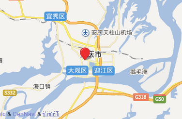

·位置

安庆位于安徽省西南部，长江下游上段北岸 ，北纬29°47’～31°17’、东经115”46’～117”44’。长江流经市境200余公里。其四周为：隔江与江西省九江、湖口、彭泽和安徽省东至、贵池、铜陵等地相望；北、西绵亘大别山南脉，与安徽省霍山和湖北省英山、蕲春、黄梅等地峰壑相通；东北与安徽省无为、庐江、舒城等相接。
安庆地区属北亚热带湿润季风气候区，具有季风明显、四季分明、气候温和、雨量充沛、光照充足、无霜期长等气候特点，适宜农林牧副渔全面发展。但由于地处中低纬度，冷暖气团活动和交锋频繁，降水的年际年内变化大。加之地形复杂多样，常有旱、涝、风、雹等气象灾害出现，给农业生产带来一定的影响。
安庆地区处于长江下游平原，支流甚为发育。北岸计有二郎河至横埠河等12条支流，大多与湖泊相串通，从东南向流动，注入长江；南岸计有尧渡河至青通河等6条支流，呈南北流向，注入长江。此外，龙泉河、鹰山河向南注入江西省鄱阳湖和太白湖。发源于岳西县境的淠河向北注入淮河，杭埠河向东注入巢湖。
|